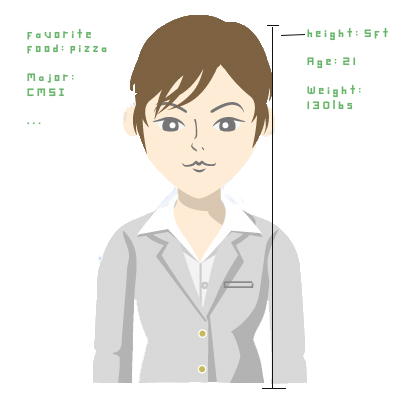

Dream Interface
Dream Interface
I love the futuristic user interface used in Iron Man 1 and 2.
My dream user interface for headmaster implements
holographic
technology and natural language interaction. Everything will
be displayed holographically.
Search
For the search page, you can tell the interface what to search
for verbally or type in the search box with
a keyboard. A list
of students with mini pictures of themselves will be generated
and displayed in a grid
like format. Then you can either say
which student you want to view or click on his or her name and
picture.
Student
Once a student is selected, a 3D hologram of that student is
displayed. Information like height, weight and age will be
displayed around the student.
In order to edit the information
you can say what to change verbally;
For example, one could say
"Change height to 5ft 2in." and it would change automatically.
You can also touch a trait with a finger and edit it directly by keyboard.
If you want to chat or
communicate with a student you can say call
"student's name" or touch an icon that looks like a phone.
If that
student is logged in to headmaster then he or she will be able to
talk to you through the hologram.
It is almost like talking to
the student face to face.

Usability Metrics
This interface's strength is in learnability and satisfaction. Since it
is possible to manipulate this user interface
using natural language, it
is fairly easy for people to learn and become comfortable with it.
You
talk to the interface the same way you converse with other people. The
ability to see and interact with
everything in 3D and the ability to speak
to people through the hologram all add to the satisfaction of the user.
Because people are more accustomed to using a keyboard or touch screen this
interace will be able to be
manipulated by in this way as well in order to
not lose efficiency.